Chapter 5: The Philosophy of Yokoi Gunpei (1997–20XX)
 p.190 [IMAGE: Chapter title page featuring an illustration of the Ultra Hand — a collapsible scissor-mechanism toy with spherical balls at one end]
p.190 [IMAGE: Chapter title page featuring an illustration of the Ultra Hand — a collapsible scissor-mechanism toy with spherical balls at one end]
Chapter 5
The Philosophy of Gunpei Yokoi
1997–20XX
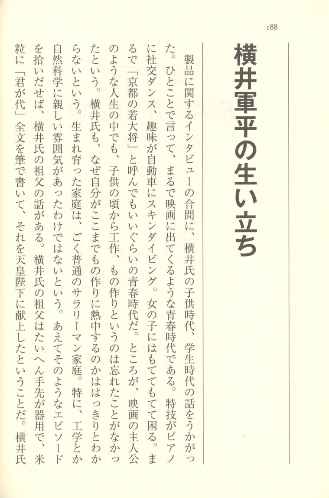
Between interviews about his products, we were able to learn something of Yokoi's childhood and student years. In a word, it was a golden youth straight out of a movie. His special skills were piano, social dancing, and skin diving — he was quite popular with girls, though that part gave him some trouble. The main character of a film, one might say — or, as they called him in Kyoto, a "young general." Even in childhood he loved making things, making things — he never lost that passion. And yet, he says, he was never quite clear on why he was so devoted to making things, or what engineering even meant to him.
Yokoi too, as one of those people for whom life is all about making things, had never forgotten it. He was born and raised in a perfectly ordinary salaryman household. In particular, there was nothing especially science-minded about the atmosphere at home — or so he says. Yet there is an episode that captures just how naturally dexterous he was. When Yokoi was small, he could pick up individual grains of rice with his fingers; on one occasion he wrote out the complete lyrics of "Kimigayo" with a brush, and his grandfather presented this to the Emperor.
 p.192 He himself seems to think that his manual dexterity was not something inherited from his grandfather, but was simply his own to begin with.
p.192 He himself seems to think that his manual dexterity was not something inherited from his grandfather, but was simply his own to begin with.
How the Piano Found Me — and How I Found Myself
I'm the youngest of four brothers. When I was a child, my father bought a piano, and all four of us brothers were taught to play — every Saturday the teacher would come, and one by one, from the oldest down, they all fell behind. I was the only one who kept at it. That's my piano story.
What the piano means to me, I think, is the strong connection it forged between music and mathematics and the natural sciences. That's where my life as a maker began. So perhaps music has been enormously important to my life. My grades as a child were not very good — but in science and music
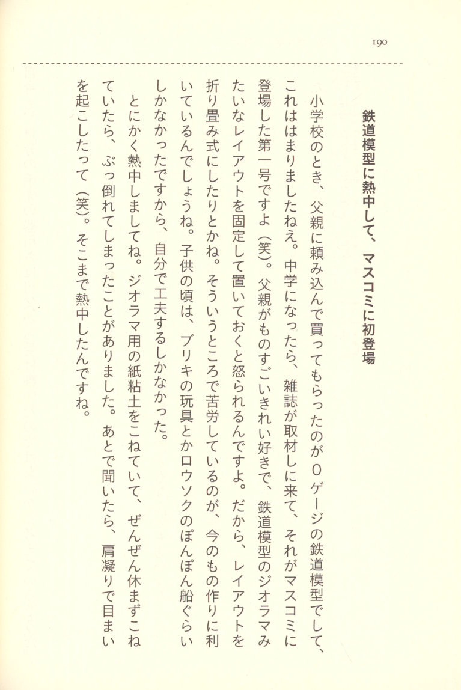
Obsessed with Model Trains — and My First Taste of the Media
When I was in elementary school, my father bought me a O-gauge model train set. A magazine came to cover it, and that was my first brush with the media. By the time I got to middle school, my father really loved how neat and tidy the layout looked, so whenever I touched it he'd get angry. That's why I was the first to appear in the magazine — it was the layout diorama of the train set. (Laughs.) My parents got so particular about the layout being fixed in place that it really didn't work for me as something I actually wanted to play with. So what I struggled with was figuring out how to make it fold up or something. In those days, kids had no choice but to come up with their own ideas. About the only material available for making dioramas was papier-mâché. I'd knead that stuff together, and I'd get so thoroughly absorbed in it — I was completely hooked. Then one day I keeled over — stiff shoulders brought on a dizzy spell — (Laughs) — and that was the end of that obsession.
 p.194 I joined the judo club in high school, and once had a sparring match against the second-dan instructor at the dojo — and ended up with a broken collarbone, which forced me to quit the club. Ever since childhood I'd been cycling to school, and that had made my legs and hips pretty strong, so when I joined the judo club I could throw people around quite easily — I was throwing guys weighing around 80 kilos at the time. So I ended up joining the high school judo club, and before long I was a black belt. Then one day a second-dan instructor from the dojo came to challenge us, and I threw him — clean off his feet. The thing about being a second-dan at the dojo, as opposed to just an ordinary black belt, is that they're on a whole different level. He threw me so hard and so completely that I broke my collarbone. (Laughs.) So that put an end to my two years in the judo club.
p.194 I joined the judo club in high school, and once had a sparring match against the second-dan instructor at the dojo — and ended up with a broken collarbone, which forced me to quit the club. Ever since childhood I'd been cycling to school, and that had made my legs and hips pretty strong, so when I joined the judo club I could throw people around quite easily — I was throwing guys weighing around 80 kilos at the time. So I ended up joining the high school judo club, and before long I was a black belt. Then one day a second-dan instructor from the dojo came to challenge us, and I threw him — clean off his feet. The thing about being a second-dan at the dojo, as opposed to just an ordinary black belt, is that they're on a whole different level. He threw me so hard and so completely that I broke my collarbone. (Laughs.) So that put an end to my two years in the judo club.
When I Took Up Ballroom Dancing — and the Girls Came Flocking…
After my collarbone healed, it turned out there was a ballroom dancing instructor living right behind my house, so I learned to dance. When I got to university, I entered competitions as an individual and placed second in the tango.
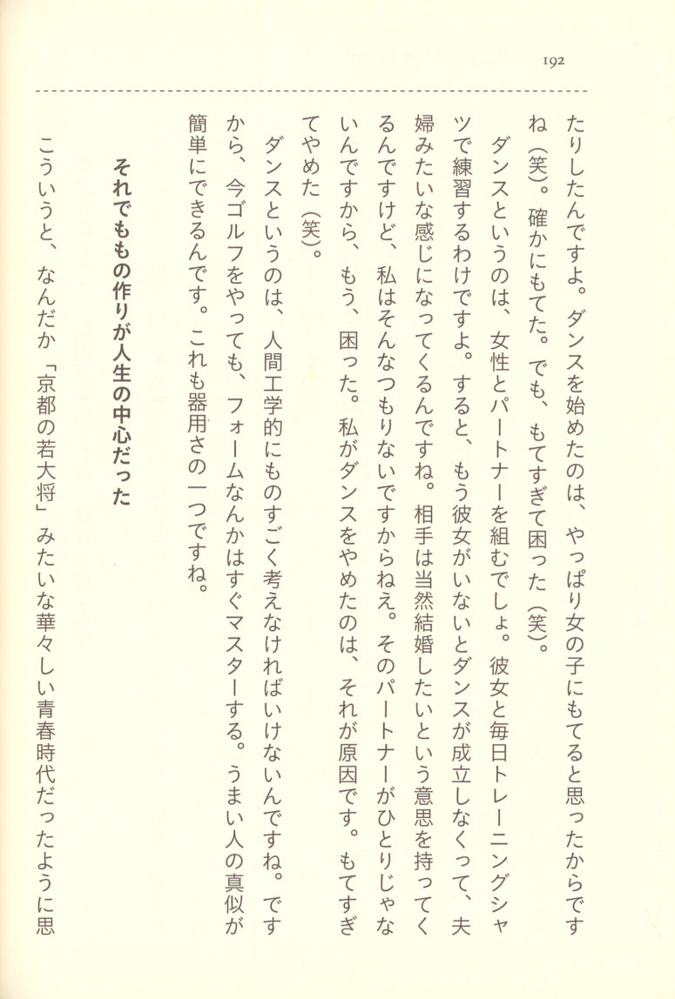
The thing about dance is that you have to think about it in terms of ergonomics — you can't just copy the form of someone skilled. That goes for golf too, which I took up later. Being good with your hands is one expression of the same idea. The form of a skilled person may look easy to replicate, but in reality you can't simply imitate it.
Making things has been the center of my life
All of which makes me think it was rather a glamorous youth — like being a young man about town in Kyoto.
 p.196 Making things has always been the center of my life. So when girls would ask me out on dates, everyone turned me down flat. Quietly, late into the night, making things — that was my idea of a good time, and turning down dates was just fine by me. But girls, of course, find that kind of thing interesting. (Laughs.) They start wanting to tempt you. Once you join Nintendo and are truly happy with what you're doing, they want to pull you away from it. (Laughs.)
p.196 Making things has always been the center of my life. So when girls would ask me out on dates, everyone turned me down flat. Quietly, late into the night, making things — that was my idea of a good time, and turning down dates was just fine by me. But girls, of course, find that kind of thing interesting. (Laughs.) They start wanting to tempt you. Once you join Nintendo and are truly happy with what you're doing, they want to pull you away from it. (Laughs.)
Up until then, I had always been spending my own pocket money to buy materials, so I had no choice but to keep doing it. The company bought materials for me, gave me long paid holidays — and instead, working late started to feel stressful. I just wanted to get out of there early.
Driving around and developing the world's first car stereo
I was quite the driver, logging a lot of miles — and in a car stereo, no less. That was the world's first car stereo. Back then, if you said "car," people thought car radio — there was no such thing as a car stereo. But I went ahead and connected a tape recorder to a car radio.
 p.197 While driving, the vibrations would cause the sound to wobble. So after about three or four years, Clarion came out with their own car stereo mechanism and started selling it. That's when my friends said to me, "What on earth is that thing now?" — laughing about it. Because I had been recording baseball commentary onto it, you see. Being able to play back a large recording of baseball commentary — nobody back then thought that was possible. But I was out hunting for a channel that was doing baseball commentary in the middle of the night, driving around with the car next to me at a red light, the driver beside me desperately searching — and that was fascinating to me.
p.197 While driving, the vibrations would cause the sound to wobble. So after about three or four years, Clarion came out with their own car stereo mechanism and started selling it. That's when my friends said to me, "What on earth is that thing now?" — laughing about it. Because I had been recording baseball commentary onto it, you see. Being able to play back a large recording of baseball commentary — nobody back then thought that was possible. But I was out hunting for a channel that was doing baseball commentary in the middle of the night, driving around with the car next to me at a red light, the driver beside me desperately searching — and that was fascinating to me.
At the time, nobody thought you could do that sort of thing with club activities at university. I was in the Boy Scouts — spending time with friends and playing wasn't something I was particularly passionate about, but I was quite into the chorus group. Though I wasn't really all that passionate about it either — I did it because it was a way to meet friends. But what I really enjoyed was making things myself — making fishing lures and going fishing every week by car. I would drive from Kyoto all the way to the Sea of Japan, about a hundred kilometers.
My love of making things — that's just my big-kid nature, I suppose.
 p.198 I love making things — I'm the type who enjoys showing what I've made to the people around me and taking pride in it. I like making things, and I like showing them off. I'm the type who takes pleasure in seeing others delight in what I've made.
p.198 I love making things — I'm the type who enjoys showing what I've made to the people around me and taking pride in it. I like making things, and I like showing them off. I'm the type who takes pleasure in seeing others delight in what I've made.
Thinking about it more, I believe I'm completely that type. Even now, I'm a big kid at heart. In that sense, back when I was a child, I was constantly watching for the look on people's faces when they saw something I'd made — that's what kept me going.
When I'm making something, I'm not the type to revise as I go. I make it straight through first, then revise. Once I've made it and gotten into production, I revise everything from there. By the time I reach the very end, I find myself thinking it all through from scratch, which means the final product ends up looking quite different from what I'd first imagined. At least, that's how I've come to understand it from experience.
So once I join Nintendo — and even within each division — I think things through carefully before proceeding. And when I do that, the number of projects that get shelved before they're fully realized becomes quite small. That's why my department has a clear reputation within Nintendo as a place that moves forward — and my team receives that recognition from above as well.
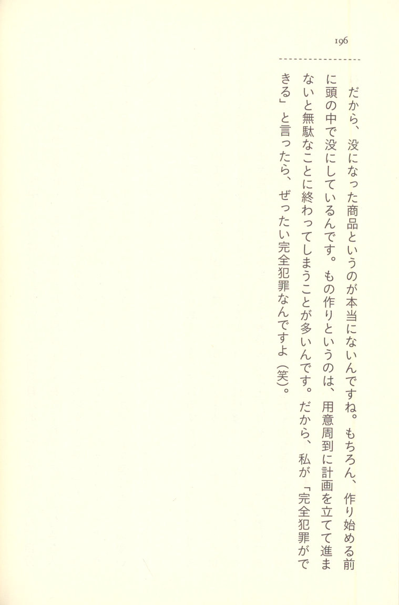
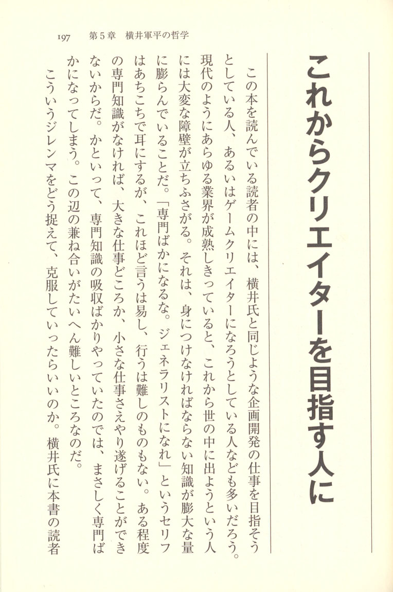
Among the readers of this book, there are surely many people who aspire to work in product development like Yokoi, or who hope to become game creators. For people like that — those who want to make their mark in the world — there is an enormous amount of knowledge they must acquire. And as every industry matures, this becomes an even greater obstacle. The fact that you have to know so much is precisely what gives rise to the saying "Be a generalist" — which is easy enough to say, but in practice exceedingly difficult to achieve. Because if you lack specialist knowledge, you can't do the big jobs; yet if you spend all your time absorbed in specialized knowledge alone, you find you can't even manage the small jobs without help. That's the dilemma. Balancing these competing demands is genuinely difficult. So how should we understand this dilemma, and how can we overcome it? The readers of this book, like Yokoi himself, must
 p.201 grapple with these questions, each in their own way. That is the development philosophy I have pursued to this day.
p.201 grapple with these questions, each in their own way. That is the development philosophy I have pursued to this day.
For Engineers, Abandoning Pride Is Essential
First, many people who call themselves specialists tend to think that if you don't use advanced technology, you can't make anything worthwhile. When I put myself in the position of the user and try to think about what to make, I realize that simple things can be produced quite quickly. What I've gradually come to understand is this: those enormous, grand machines that engineers so desperately want to build — the ones they pour their whole lives into from the very start — turn out to produce nothing but waste. Engineers, in truth, can probably manage with something in between. It may not be glamorous, and it may not be what they envisioned at the outset, but surprisingly, the things built first end up becoming hit products. And so, selling things, staying committed to selling — that is what I think connects most directly to hit products. That is why everything I have done up to now, I believe, represents the development philosophy of an engineer who has abandoned pride. And that, I am convinced, is precisely what has made those products hits.
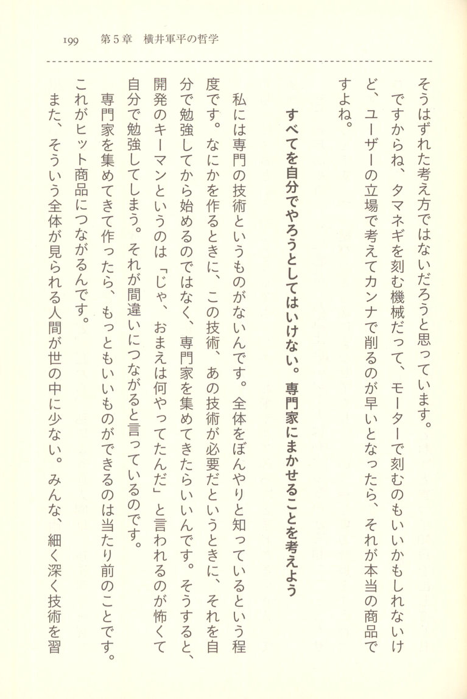
Never try to do everything yourself. Think about leaving things to specialists.
I have no such thing as specialized technology of my own. I vaguely know that such-and-such technology exists, and I vaguely know that this technology ought to be necessary — and when I start to make something, rather than doing it myself, I gather specialists. But what frightens me when I do that is this: the key person in development says, "Well then, what are you doing?" and I end up being told, "You haven't studied anything yourself." If that happens, it leads to the wrong outcome. So what I do is study on my own first, and then gather the specialists. That is what connects to hit products. And the people in this world who can do that are surprisingly few. Everyone, in their own quiet way, studies technology deeply —
 p.203 and sink deep into their specialty alone. So for someone like me, the things I have going for me are few — but if I come out on the losing end of things, well, "scraps fall where they may" — I wonder where that phrase has gone off to — but hit products can come from two directions when seen from a technologist's standpoint. I suppose it ends up disappearing somewhere.
p.203 and sink deep into their specialty alone. So for someone like me, the things I have going for me are few — but if I come out on the losing end of things, well, "scraps fall where they may" — I wonder where that phrase has gone off to — but hit products can come from two directions when seen from a technologist's standpoint. I suppose it ends up disappearing somewhere.
Don't become a technologist. Become a producer.
This idea of wanting to produce things — to put it in non-technical terms, that's how it is. So what frightens me is being told, "That's not technical at all — go ahead and try it yourself." My way of working is this: "I don't understand anything beyond this point, so I'm counting on you to handle that part." That way, each group takes it upon themselves to think, "Well then, I'll leave it to him" — and they end up pulling out their best knowledge. If I were to give high-handed orders saying, "Do it this way, do it like that," then each group would reluctantly do as told. And when I say it this way — "this is how it is, this is how it should be done" — and I say it as if I know what I'm talking about, that group won't move. "So then," they say, and they pull out their knowledge for
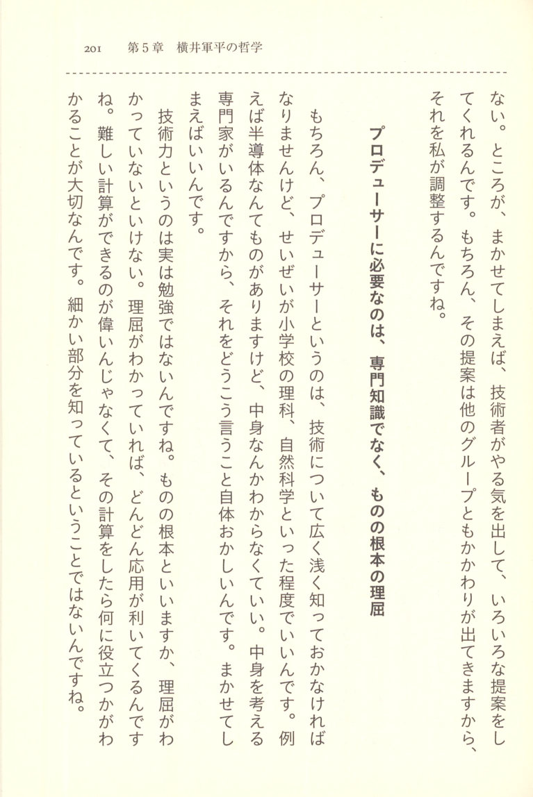
What a producer needs is not specialist knowledge, but a fundamental understanding of how things work.
Of course, as a producer, you don't need to be technical — but you do need to know things at a broad, shallow level. For semiconductors, for instance, you don't need to understand the inner workings. Elementary school science, natural sciences — knowing things to roughly that level is fine. Leave the inner workings to the specialists. But knowing how to think about those inner workings — that's what matters. And that's not strange at all.
What's difficult, they say, is that technical expertise is actually not about studying — it's about understanding the fundamentals. And once you understand the fundamentals, you can see how applications branch out endlessly, and you'll understand where the theory goes. What's difficult about that is that being able to do the calculations isn't what makes you great — it's not about that at all. Knowing what a detailed calculation is ultimately good for — that's what's important. Understanding the fine details doesn't mean anything in itself.
 p.205 Young people should have the eyes to see from the outside, and the courage to act on what they see.
p.205 Young people should have the eyes to see from the outside, and the courage to act on what they see.
The industry does have a certain stagnation to it — that's undeniable. But when I look at it from the outside, from a position within that industry where I'm free to observe things, I'm sometimes genuinely surprised. Linking what I see with ideas from a completely different field — that's what's necessary. To break through the sense of stagnation within a group, you need someone who can look at things from the outside, from a fresh angle. One way to do that is to keep wrestling with a problem inside the group — but another is to look outward, to take in the scenery beyond, and let that break things open.
What I want young people to do is enter a company like Nintendo — an immature company — with the courage to break through that stagnation, and to feel fortunate that they can do so, rather than thinking, "I wish I could join a more established company with proven methods." But for the development department, there was no such thing — none of that existed at Nintendo. And that's precisely why I was able to do what I did so thoroughly. "Selling products" — that was the most forward-thinking thing for the company. And nobody opposed it, nobody criticized it, nobody said, "What does your technical ability even amount to —"
 p.206 The real problem in today's world is the person who stands above young people by being even bolder than they are.
p.206 The real problem in today's world is the person who stands above young people by being even bolder than they are.
If you try to do something new, you get pushed down from above, you get your ideas suppressed — that's the reality. So, put in reverse: it's extremely important for young people to put their ideas forward without hesitation. Speaking concretely, seriously thinking about how to open up the mouths of new employees at meetings — that, I think, is something young people themselves have thought about quite a lot. At banquet-style meetings, having new employees speak up, or coming up with clever ways to run a meeting — "Why don't I say something at the meeting?" — that sort of thing. But during my own time as a new employee, I was a similarly foolish young person, and I tried things like that in a similar environment. The people who opposed what I was doing weren't there, you see — that's why I was able to create things. If there had been people opposing me, I would have had to fight back.
For example, I think that if even one young employee had been there doing the same thing, society would have absolutely — if a young person proposed something, if they spoke up about anything,
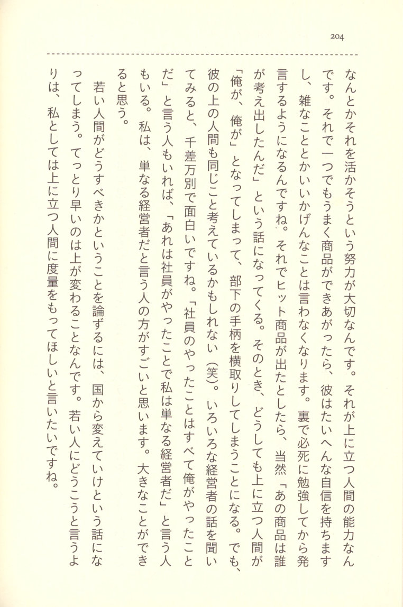
So when I say "the person standing above you," what I mean is: someone who, when an employee does something, says "that was all done by the employee" — that person I think is a truly great manager. There are people like that too. When I look at it and think "everything that person did was actually done by the employee," I think to myself, that's a genuinely great manager. It's a big thing.
As for what young people should do — to discuss that, it becomes a matter of changing things from the national level, and that becomes a story about how things should change from the country on up. Young people getting up earlier — the key is for things to change from above. What I want to say is, I personally want the people standing above me to please show a little more tolerance.
 p.208 The Mistaken Thinking That Engineers Fall Into
p.208 The Mistaken Thinking That Engineers Fall Into
How to Make Products That Sell
Over the thirty years I've spent at Nintendo making all kinds of products, I've come to see the ways in which engineers tend to fall into mistaken thinking — the aspects that make engineers reluctant to show certain products to the world. Where exactly does the typical engineer's way of thinking go wrong? I personally want to touch on that point. I think I've managed to avoid those pitfalls myself.
The so-called average engineer's way of thinking — where does it go wrong? The entertainment world and the utility goods world are completely different worlds. What I've been working on is the world of entertainment products. Entertainment products are entirely different from utility goods. Utility goods, you see, are things where having them is convenient — they let you do things faster,
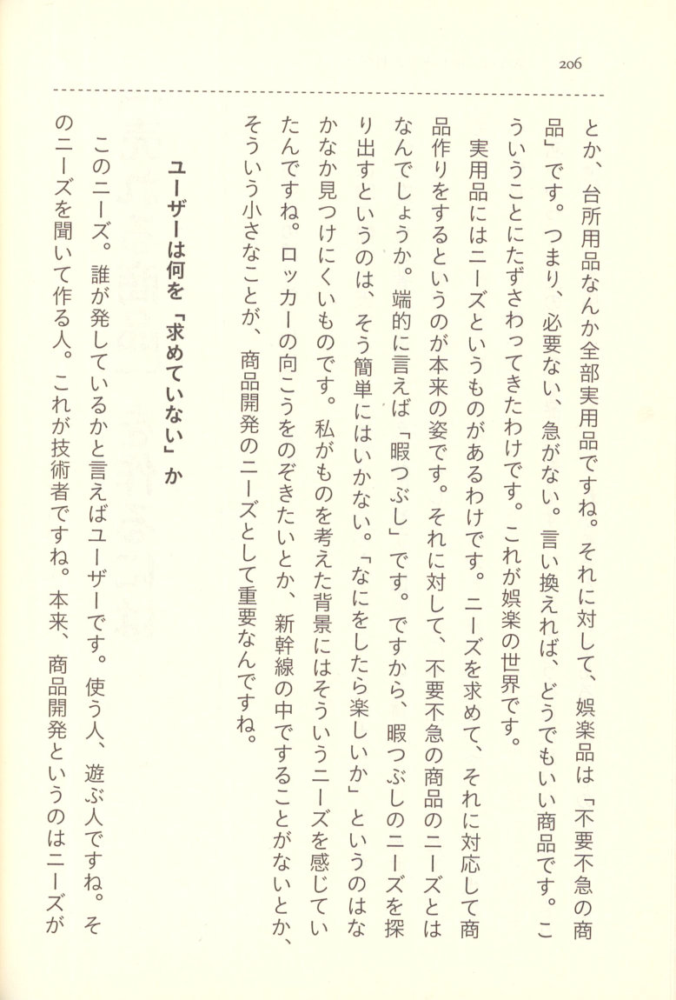
In the world of entertainment, then, what you're seeking is a need for unnecessary, non-urgent things. So the product-making approach for utility goods — where a genuine need exists at the outset — doesn't apply here. In response to that need, you develop products to meet it. What, then, is the true form of entertainment product-making? Put simply, it's finding things that kill time. The need for "something to do when I'm bored" — that is what entertainment product-making is really all about. Finding that is, frankly, not easy. It's hard to find. I think about the things I want to do, and ask myself whether the backdrop behind those things could be enjoyable — and yet I can't seem to find even the smallest thing. Things like peering into lockers on the Shinkansen, or the fact that there is no need felt for such small things — these are actually important needs in product development.
What Users "Don't Ask For"
This need — who is voicing it? In engineering terms, it's the user. The people who use things, the people who play. That's the user. Originally, product development means listening to the user's needs and building to meet them. That
 p.210 is the normal pattern. But here, there is a significant pitfall — and I believe it lies in what "engineer" and "user" actually mean.
p.210 is the normal pattern. But here, there is a significant pitfall — and I believe it lies in what "engineer" and "user" actually mean.
An engineer is someone who, when they hear about something, will commercialize it. That's what an engineer is. When a certain user voices a need, the engineer hears it and goes off to build the product. But what that user is saying, when they express that need, is: "I'd like this done," "I want to be able to do this" — and through their technology, the engineer can add more and more to that. "We can do this, we can do that too" — because with electronic ranges and such, engineers can make things that go well beyond what the user is asking for. Attaching features costs almost nothing from an engineering standpoint, so the product ends up costing 10 yen to add a feature, but the user has no idea, and the worst outcome is that the cost-up makes the product 20 yen — and on top of that, the user has no idea how to use it.
When I am developing products, even as an engineer, conveying to the user what the user wants is extremely difficult. It's simple, really. But when developers ask "what does the user want?" — finding that answer is very hard. For example, suppose it comes down to monochrome versus color, and which is better. Then anyone would say color is better. But the real downside of color is that batteries run out faster. And when that happens, the product price goes up, and "the user asked for it" — the number of people who can actually explain that is very small.
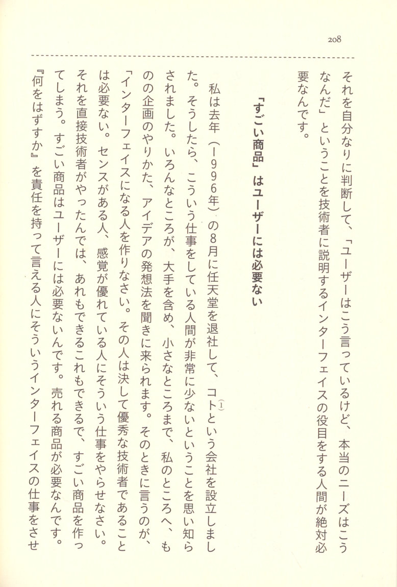
"Amazing Products" Are Not Needed by Users
Last year, in August 1996, I left Nintendo and founded a company called Koto (コト). In doing so, I began to realize how few people truly understand what I'm talking about. So then, I started doing all kinds of work, including with large companies, and right down to the small details — and I found myself coming to my own conclusions about the way projects are run, about interface, about how to find people with ideas, and about the approach to developing ideas. At that point, what I want to say to those who are truly skilled engineers is this: a person with good instincts, a person with refined sensibilities — that person will absolutely not do fine work. They can do anything, they can do everything, so they end up building amazing products. But amazing products are not what users need. Products that sell are the kind of interface that users need.
"What should be left out?" — the person who can take responsibility for that and say it to the user, who can say "this is what the user doesn't need" — it's that kind of interface work
 p.212 that is truly essential. And it means doing product planning with that person at the center — which is actually quite difficult.
p.212 that is truly essential. And it means doing product planning with that person at the center — which is actually quite difficult.
This interface work at our company is, to be frank, something I have experience with myself. When you listen to what a user says and start drawing up diagrams yourself, you realize that no matter how many lines you put in, somehow it all comes together here. Once you've drawn it yourself, you understand just how mistaken you were about a single line — how convenient it becomes afterward, how good it feels. But if you have someone else draw that one line, you can very easily correct the diagram later. To put it in the extreme, there were times I didn't even know where that one line was going. Still, erasing it makes it very difficult to fix. When engineers take that kind of work directly in hand, they end up just going along with whatever they feel like, and the result is a product with no efficiency — not a bad product in itself, but is there really anyone out there who can keep that under control?
Don't Get Obsessed with Technology — Think Horizontally
And there is another thing: getting obsessed with your own plans.
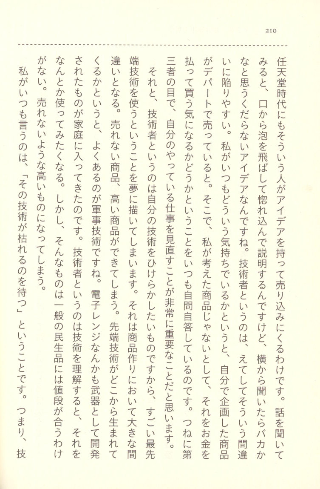
And then there's the obsession with cutting-edge technology. The dream of engineers is to show off their own technical prowess through the products they make. Cutting-edge technology can produce remarkable things, but it also gives rise to a huge gap: things that can't be sold. High-end products. That's because cutting-edge technology is military technology, you see. Electronics and similar things were developed as military technology, then made their way into the home. So what was developed, well — engineers, when they understand a technology, want to put it to use somehow. But things like that tend to be priced too high for ordinary consumer goods. And they end up not selling.
What I always say is: "Wait for that technology to mature." In other words, the tech-
 p.214 nology becomes widespread, and prices keep coming down. That's the sweet spot to aim for. For example, if Game & Watch had come out five years earlier, a machine that ended up costing 3,800 yen would have cost 100,000 yen to make. With mass production, it got cheaper and cheaper. So it was a hit. That's why what I call "horizontal thinking about mature technology" — when you take a mature technology and think horizontally about it, you can find all sorts of ways to use it. What can be done with it? Think about it horizontally, and all kinds of ideas come flowing out. That's what it's all about, isn't it?
p.214 nology becomes widespread, and prices keep coming down. That's the sweet spot to aim for. For example, if Game & Watch had come out five years earlier, a machine that ended up costing 3,800 yen would have cost 100,000 yen to make. With mass production, it got cheaper and cheaper. So it was a hit. That's why what I call "horizontal thinking about mature technology" — when you take a mature technology and think horizontally about it, you can find all sorts of ways to use it. What can be done with it? Think about it horizontally, and all kinds of ideas come flowing out. That's what it's all about, isn't it?
Let your subordinates flourish, and the fruit comes back to you
Finally, I'd like to talk about how to nurture the developers who work under you. Engineers, I must say, have a tremendous amount of pride. I was at Nintendo for sixty engineers — well, I was an engineer myself — but engineers are extremely proud, and getting them to develop things is difficult. What I did was put in 100 percent of my own effort, and I found that the most important thing — how to make that work out well — was: they would show their ideas to me and what I could do for them.
 p.215 What happens is this: a young engineer comes up with a wonderful idea and proposes it to his boss. The boss then claims that idea as his own and takes it upstairs. When that happens, many bosses end up doing the same thing over and over. And when the young engineers sense this, they stop coming up with ideas a second time. That's foolish, I thought. So what I did was, whenever an engineer came up with an idea, I would call him over and say, "Let's flash out this idea of yours and file a patent application on it." What I actually did was help the people in my department look up the relevant Nintendo documents, and about half of what came out bore my name. Everything there was something I had thought of — but that's how it worked. And so, by putting in that effort for them, they gradually began putting out a tremendous amount of energy themselves. That's what it comes down to.
p.215 What happens is this: a young engineer comes up with a wonderful idea and proposes it to his boss. The boss then claims that idea as his own and takes it upstairs. When that happens, many bosses end up doing the same thing over and over. And when the young engineers sense this, they stop coming up with ideas a second time. That's foolish, I thought. So what I did was, whenever an engineer came up with an idea, I would call him over and say, "Let's flash out this idea of yours and file a patent application on it." What I actually did was help the people in my department look up the relevant Nintendo documents, and about half of what came out bore my name. Everything there was something I had thought of — but that's how it worked. And so, by putting in that effort for them, they gradually began putting out a tremendous amount of energy themselves. That's what it comes down to.
The hollowing out of industry is simply a shortage of ideas
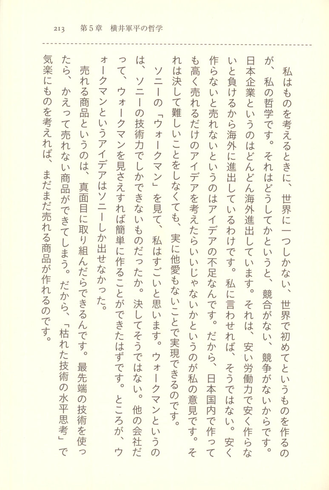
 p.217 (1) Koto Co., Ltd. is a company engaged in research and development across two fields: from LSI design and device development to products related to entertainment and hobbies. It was founded by Yokoi in 1996.
p.217 (1) Koto Co., Ltd. is a company engaged in research and development across two fields: from LSI design and device development to products related to entertainment and hobbies. It was founded by Yokoi in 1996.
 p.218 *This interview was conducted in 1997.*
p.218 *This interview was conducted in 1997.*
Gunpei Yokoi: What Comes Next
— You left Nintendo and founded a company called Koto, but what specifically will you be doing going forward?
Having spent thirty years at Nintendo with the world of play as my focus, I'd like to continue pursuing that world at Koto as well. I feel I have real expertise in the realm of play. As for video game hardware — well, that's still a trade secret, so I can't go into detail just yet. (Laughs.) I'm also thinking about getting into the consumer products space three years down the line. In the world of play you're limited to play, but in the world of consumer products you can do so much more — and I have a feeling I could work in that space too. In fact, people in the consumer products world often come to hear what I have to say and seem quite surprised by it. The consumer products world, you see —
 p.219 when you look at it from the perspective of play, you start to see things from a different angle. So rather than sticking narrowly to entertainment, I'd like to challenge myself across all kinds of fields.
p.219 when you look at it from the perspective of play, you start to see things from a different angle. So rather than sticking narrowly to entertainment, I'd like to challenge myself across all kinds of fields.
— The worlds of practical products and play connect quite easily, don't they?
Yes, even in practical products, there are quite a few people these days using what you might call humorous expressions. People in the practical products world and I, coming from the world of play — I think we can complement each other quite well, and I believe there's real potential for us to create something new together. That said, I don't think new things can be born simply by breaking into a mature market. My fundamental thinking is this: I myself connect play with something else, break into a mature market, and create an entirely new market — that is the goal.
— Do you have a specific target in mind for which consumer product markets to pursue?
For example, I think the medical field could be quite interesting. When we were working on the Virtual Boy, the PL Act —
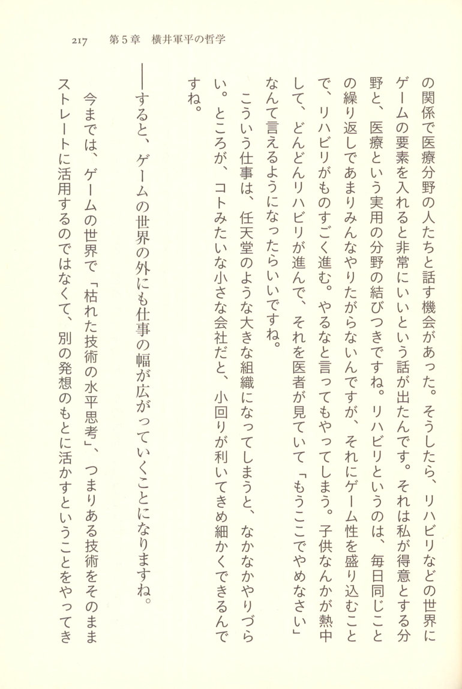
— So the scope of work outside the game world is going to broaden quite a bit, then.
Yes. And up until now, in the world of games, there's been what you might call "horizontal thinking with withered technology" — in other words, taking an existing technology and applying it as-is, rather than using it as a springboard for entirely new ideas. Instead of deploying it directly and straightforwardly,
 p.221 you might think of it as linking the world of games — which has matured to a certain degree and is hitting a ceiling — with fields like medicine and practical goods. The essence of games is "fun," and that element of fun isn't going away. So what I'd like to explore is the idea of connecting that fun to the worlds of medicine and everyday products. In other words, what would happen if we applied "horizontal thinking with withered technology" there? That's the direction things are headed, I think. (Laughs.)
p.221 you might think of it as linking the world of games — which has matured to a certain degree and is hitting a ceiling — with fields like medicine and practical goods. The essence of games is "fun," and that element of fun isn't going away. So what I'd like to explore is the idea of connecting that fun to the worlds of medicine and everyday products. In other words, what would happen if we applied "horizontal thinking with withered technology" there? That's the direction things are headed, I think. (Laughs.)
 p.222 Afterword
p.222 Afterword
Looking back on my life, I think it all started from "being an academic washout" — that's where my journey as a working adult began. Because of that, I've always felt deep down that "I can't do anything on my own, so I need the help of others." And perhaps that is why the products I developed hit the market the way they did. Everything I achieved — the development, the manufacturing technology, the materials procurement, Nintendo's sales force — all of it was made possible through the cooperation of my colleagues and Nintendo's selling power.
That's why, during my time as head of the R&D department, I always placed great importance within the department on what I called "harmony among people" — the idea that within the department, section chiefs, ordinary staff, superiors and subordinates are all the same. I advocated for stripping away as much as possible the kind of atmosphere that comes from rank, and the staff came to call this "Yokoism." One year toward the end of the year, a department year-end party was organized. The department head contributed 10,000 yen, the section chief 8,000 yen, and the others
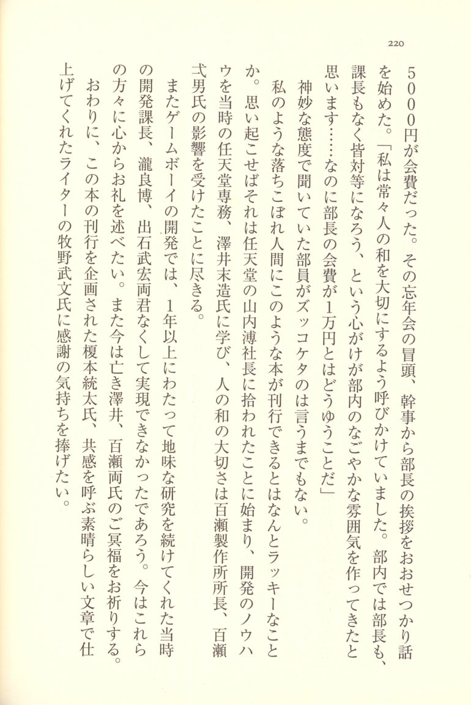
I find it strange… even though I had staff within the department who listened to me, a book like this is not something I could produce on my own. The staff members who contributed 1,000 yen were not at all being stingy — that is just how it goes.
I owe a great deal to the fact that this book was picked up by Momose Manufacturing's president and brought to publication. And I am lucky that it happened.
As for the Game Boy development, Tatsuzawa Takehiro, who was then Nintendo's managing director, learned from Yamauchi Hiroshi, Nintendo's president, the importance of harmony among people. As game division head, Taki Yoshihiro continued his quiet research for over a year without anyone's help, and was probably unable to realize it at the time. I now pray for the happiness of the late Tatsuzawa and Momose.
Finally, I would like to express my heartfelt gratitude to Motoki Tōta, who planned the publication of this book, to the wonderful writers who contributed to it, and to Makino Takefumi, the writer who put it all together.
p.224 April 1997
Gunpei Yokoi
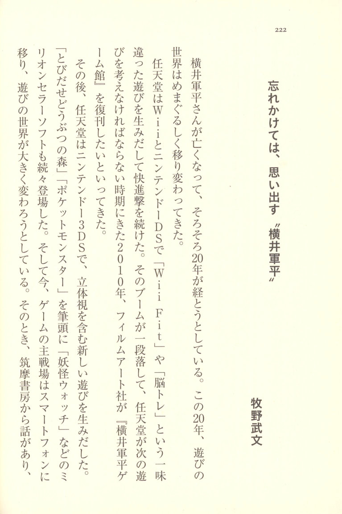
Since Gunpei Yokoi passed away, the world of play has been changing at a dizzying pace, and nearly twenty years have gone by. Over these twenty years, Nintendo has moved from the Wii to the Nintendo DS, continuing its relentless advance, creating one new game after another. "Wii Fit" and "Brain Training" became crazes, then when those booms subsided, Nintendo went on to produce the next wave of entertainment. It was around that time, in 2010, that Film Art publishing company decided they wanted to reissue *Yokoi Gunpei Game Kan* — a book that had given us so much to think about, arriving at just that moment of rapid transformation in play.
After that, Nintendo produced the Nintendo 3DS, bringing us new forms of play including stereoscopic 3D. With *Tomodachi de Otomodachi no Mori* ("Tomodachi Collection"), *Pocket Monsters*, and Yo-kai Watch among the leading titles, Lion Sellers' software also appeared one after another. And now, with gaming's main stage shifting to smartphones, the world of play is on the verge of another great transformation. It is at this moment that Chikuma Shobo reached out to us, and—
Takefumi Makino (牧野武文)
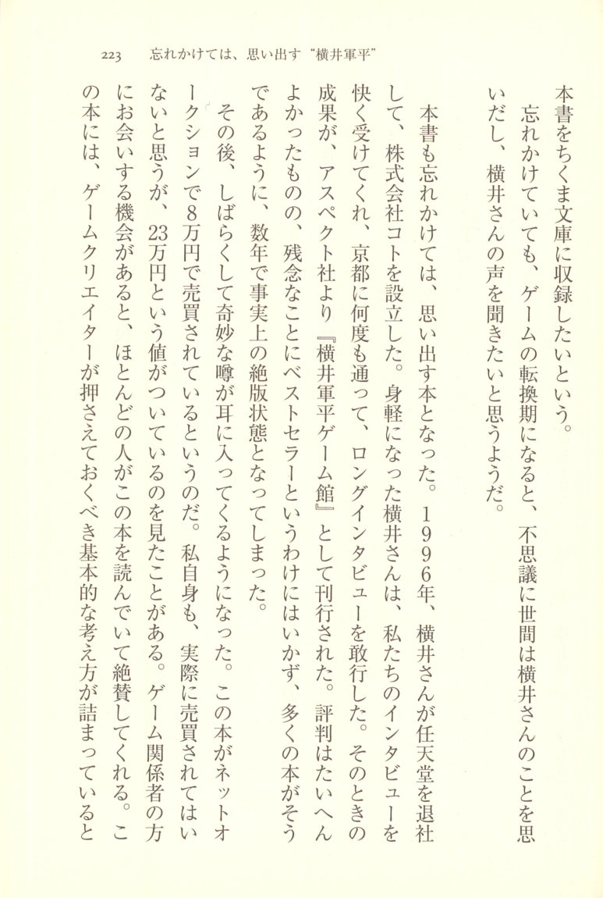
When you forget something, you remember it again. And when the world of play reaches a turning point, people find themselves, strangely, thinking of Yokoi. They want to hear his voice. They want to remember him.
As that feeling grew, the book found its moment. In 1996, the year Yokoi left Nintendo, we conducted our interviews with him. Yokoi, who had so readily agreed to be interviewed by us, went on to give us long interview sessions in Kyoto on numerous occasions. When the book was published in that period, the reception was, frankly, not all it could have been — many books simply didn't sell. But the results came later: the book was picked up by Aspect publishing company and issued as *Yokoi Gunpei Game Kan*, and from there it went on to sell remarkably well.
After that, word began reaching our ears of a strange rumor: that the book had gone out of print and was being sold online for 23,000 yen — and that this price was, if anything, undervalued. I myself have seen it listed for sale by people in the games industry. When I think that this book has the power to bring together so many people who read it and come away deeply impressed — game creators in particular — and that it lays out the fundamental way of thinking that any game creator ought to keep close, this book
 p.227 is what it is.
p.227 is what it is.
We received many such requests from various publishers who wished to reprint it. But the book had gone out of print, and after more than ten years had passed, Film Art publishing company stepped in, and we were able to bring it back — this time as a Chikuma Bunko paperback edition, thanks to the efforts of the editors in charge there.
Why does this book have such a strange fate in the modern age? Yokoi was the toymaker who formed the backbone of Nintendo. It is remarkable how little his name is known to the world at large. Game creators, game designers — all the members of these teams contributed, yet it is almost uncanny how seldom their names appear publicly. The sole exception is Miyamoto Shigeru (宮本茂). Nintendo has a company culture of thinking "any job, whoever does it, the whole team contributed," and it was precisely because of this that Miyamoto became known worldwide as the creator of Mario, a globally recognized character — and became famous overseas even before he was well known in Japan. To be honest, I myself had barely encountered the name "Yokoi Gunpei" right up until the 1996 interviews, despite his being Nintendo's first head of product development at the time.
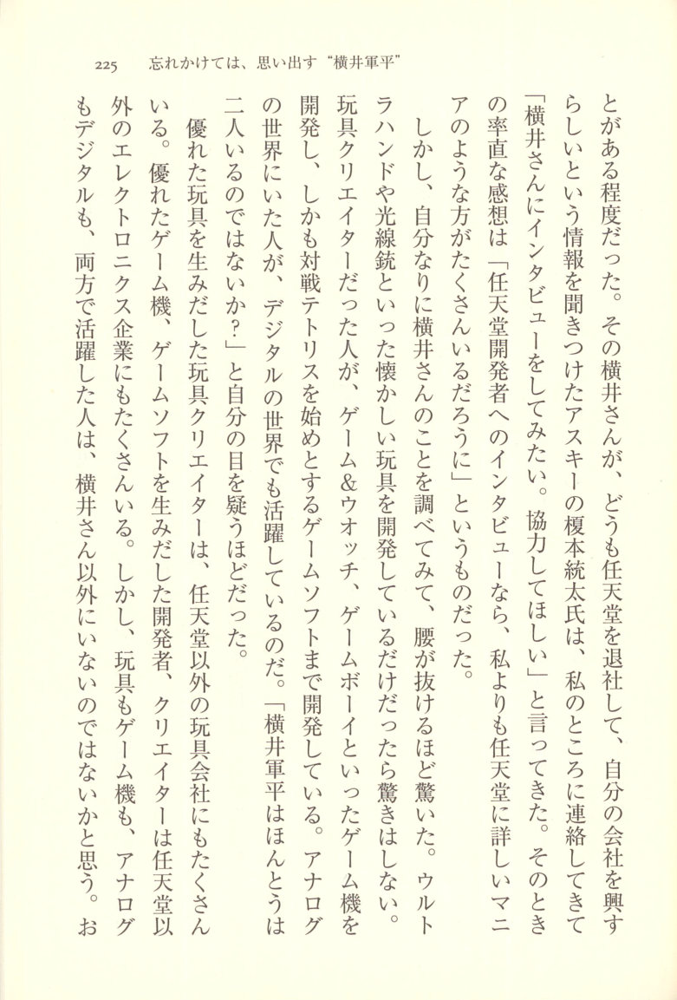
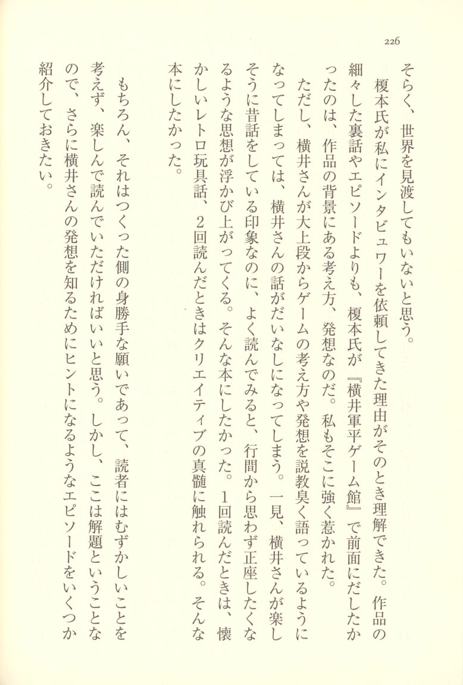
Of course, this is a selfish wish on the part of the one who made it, and I think readers may find it difficult. But here there is no need to feel daunted — just enjoy reading it. However, in order to further acquaint readers with Yokoi's ideas and to serve as a hint, I would like to share here a few episodes.
 p.230 Ever since this book was published, people around me would ask, "Who exactly is Gunpei Yokoi?" It was troublesome to explain, so I would answer with "Nintendo — everything except the Famicom." The way I put it — "everything except the Famicom" — is a bit rough, but when it comes to Yokoi's approach to games and play, to understand it you need to know that he kept his distance from home gaming consoles: the Super Famicom, Nintendo 64, and those sorts of televison-connected game machines. Yokoi himself felt psychological distance from them, and there were things he could only develop as part of the first wave of Famicom development — software developed exclusively within the Famicom framework, things he felt uneasy about not being able to venture outside of. Among these was a game for the Famicom that moved a character on screen and shot at it with a light gun — "Block and Gyro." Both were, in their own way, attempting to bring something "outside the screen" — realistic robots — out into the real world.
p.230 Ever since this book was published, people around me would ask, "Who exactly is Gunpei Yokoi?" It was troublesome to explain, so I would answer with "Nintendo — everything except the Famicom." The way I put it — "everything except the Famicom" — is a bit rough, but when it comes to Yokoi's approach to games and play, to understand it you need to know that he kept his distance from home gaming consoles: the Super Famicom, Nintendo 64, and those sorts of televison-connected game machines. Yokoi himself felt psychological distance from them, and there were things he could only develop as part of the first wave of Famicom development — software developed exclusively within the Famicom framework, things he felt uneasy about not being able to venture outside of. Among these was a game for the Famicom that moved a character on screen and shot at it with a light gun — "Block and Gyro." Both were, in their own way, attempting to bring something "outside the screen" — realistic robots — out into the real world.
In the Game Boy-era competitive Tetris game — *Tetris* (the versus-type) — the two players would connect their Game Boys with a cable and play against each other, with one side clearing blocks and —
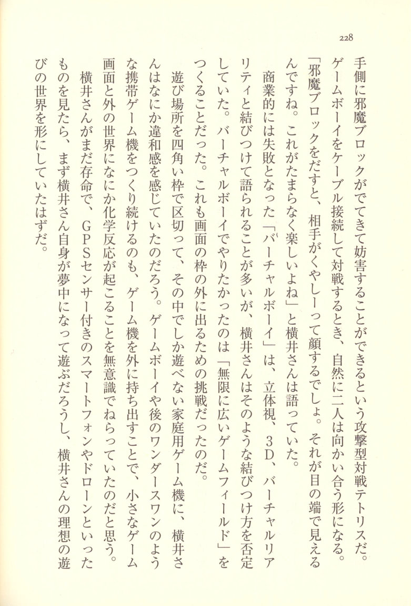
When it came to commercially linking "Virtual Boy" to anything, there were many who could not help but speak of it in terms of stereoscopic vision, 3D, virtual reality — but Yokoi kept denying that kind of framing. What Yokoi wanted to create was an "infinitely wide game field." Virtual Boy's challenge was to go beyond the frame of the game screen — to make something that could only be played by going outside the frame. This is also why, in an era of handheld game consoles and the WonderSwan that followed, Yokoi continued — almost unconsciously, I think — to carry a game machine outside the home, and small games like those created a sense of dissonance with the surrounding world, and continued to build that sense. Game Boy and later home consoles, the WonderSwan — Yokoi found play everywhere, in any square frame that divided the screen from the outside world.
If we had seen the things Yokoi still had in him — GPS-sensor-equipped smartphones, drones, and all the chemical reactions they set off — first Yokoi himself would have become absorbed in play, and Yokoi's ideal vision of play would surely have taken shape in that world.
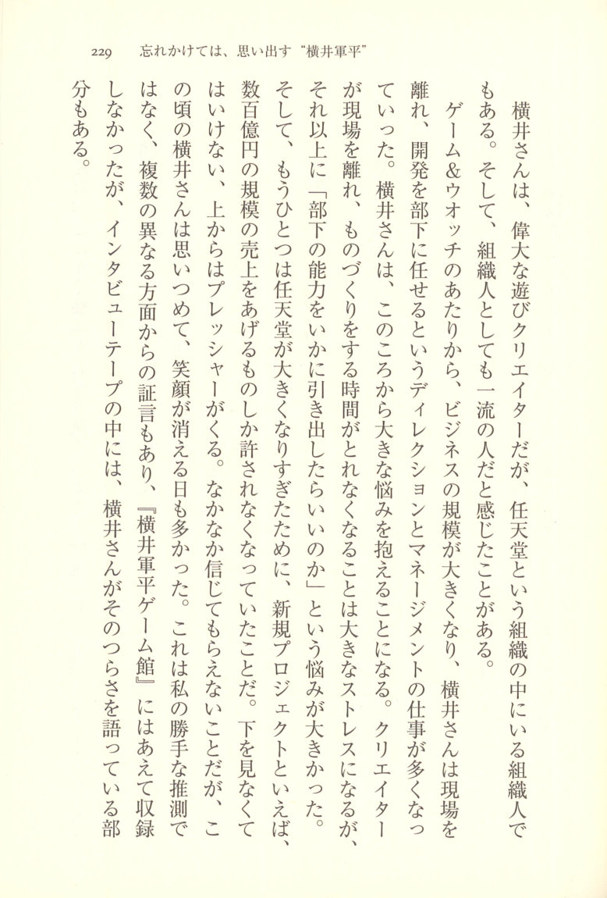
There are also testimonies from multiple different perspectives in the interview recordings included in this book, *Yokoi Gunpei Game Kan*, and within those interviews, there are sections where Yokoi himself speaks of this loneliness.
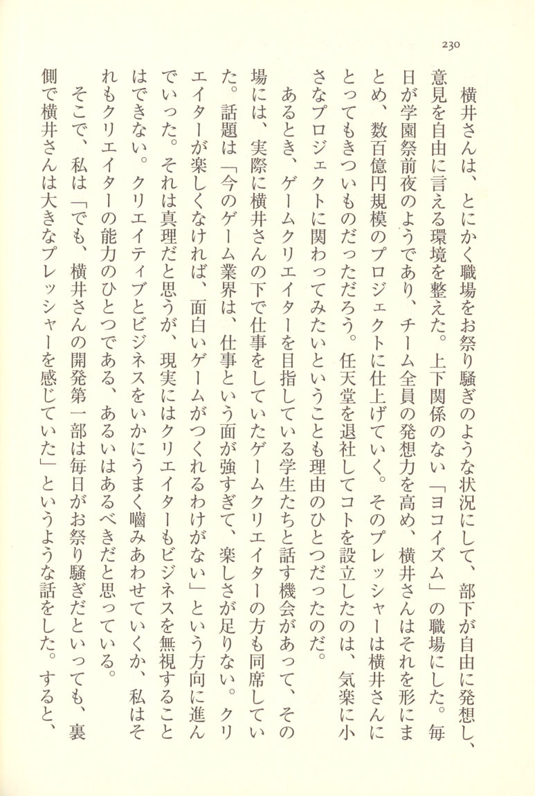 p.234 from the development side of things — I was deeply moved by this, not metaphorically but literally, and felt goosebumps all over from the pressure the company was putting on him. How did Yokoi respond to it? As a department head, maintaining an atmosphere of openness and smiling faces, he kept his subordinates completely unaware of it. He truly was a remarkable person, I think.
p.234 from the development side of things — I was deeply moved by this, not metaphorically but literally, and felt goosebumps all over from the pressure the company was putting on him. How did Yokoi respond to it? As a department head, maintaining an atmosphere of openness and smiling faces, he kept his subordinates completely unaware of it. He truly was a remarkable person, I think.
He created things himself. He coined the phrase "unnecessary, urgent goods" — a product that, to put it in extreme terms, is "something the world could do without, yet that you can't help wanting." That's why, starting in the nineties, as the concept of the "unnecessary, urgent product" transformed into products that responded to the Famicom era — what had been an ordinary game idea became a Nintendo game — Yokoi began to sense a crisis in play itself. And yet, in the same period, a succession of ordinary games came flooding out.
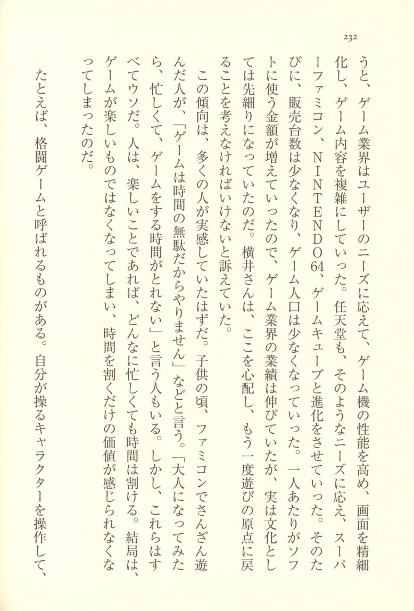
This tendency was something many people had already begun to sense. Around the time children were having a miserable time with the Famicom, people began to say things like "I've become an adult and tried playing, but I can't." There were also plenty of people who said, "Games are a waste of time — I can't afford to spend time on them." Being busy, "I can't find the time to play games," they would say. But if a game is something enjoyable, then no matter how busy you are, you can always find the time for it. The conclusion, then, is that games had ceased to be genuinely fun — and that people had lost any sense that time spent on them was worthwhile.
Take, for example, what are called fighting games. You control your own character,
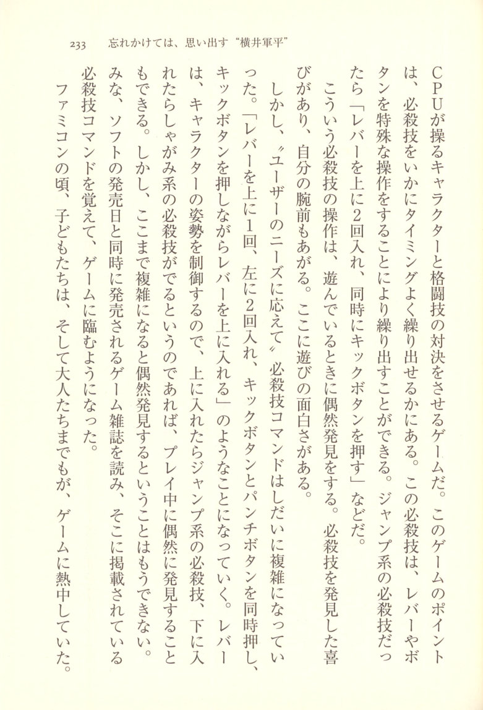
 p.237 But games, when you think about it, are something the world doesn't strictly need. They're a waste of time — and yet they can enrich the spirit. That, precisely, is the true nature of play. However, once games began responding to user demand in this way, before you could even sit down to play a game, you had to study its strategy — and those who couldn't master the techniques had no choice but to spend enormous amounts of time practicing until they forgot to eat and sleep, grinding away until they could hold their own against opponents. Those who couldn't manage that simply couldn't enjoy the game. What's more, the only people who could advance to the point of truly enjoying a game were the hardcore players. The result was a situation that might be described as: "Gaming is a waste of time — and not even any fun." So many people said, "Gaming is a waste of time," and stepped away from games. The game developers who had worked so hard to build all of this — what meaning could there be in it for them? Their industry's output vanished in an instant. Games are not something enjoyable in themselves — they became grueling work, demanding effort and perseverance. This, Yokoi believed, was the greatest
p.237 But games, when you think about it, are something the world doesn't strictly need. They're a waste of time — and yet they can enrich the spirit. That, precisely, is the true nature of play. However, once games began responding to user demand in this way, before you could even sit down to play a game, you had to study its strategy — and those who couldn't master the techniques had no choice but to spend enormous amounts of time practicing until they forgot to eat and sleep, grinding away until they could hold their own against opponents. Those who couldn't manage that simply couldn't enjoy the game. What's more, the only people who could advance to the point of truly enjoying a game were the hardcore players. The result was a situation that might be described as: "Gaming is a waste of time — and not even any fun." So many people said, "Gaming is a waste of time," and stepped away from games. The game developers who had worked so hard to build all of this — what meaning could there be in it for them? Their industry's output vanished in an instant. Games are not something enjoyable in themselves — they became grueling work, demanding effort and perseverance. This, Yokoi believed, was the greatest
 p.238 This trend has continued ever since the main battlefield of gaming shifted to smartphones. Games themselves have become simpler, and the number of games that anyone can enjoy has increased. However, in order to enjoy a game properly, you must spend money on it — games have evolved into something structured around microtransactions. From now on, the only people who will bother with games are those who can buy large quantities of money-advantageous items. The number of people saying "Games are a waste of money" will only grow.
p.238 This trend has continued ever since the main battlefield of gaming shifted to smartphones. Games themselves have become simpler, and the number of games that anyone can enjoy has increased. However, in order to enjoy a game properly, you must spend money on it — games have evolved into something structured around microtransactions. From now on, the only people who will bother with games are those who can buy large quantities of money-advantageous items. The number of people saying "Games are a waste of money" will only grow.
Yokoi was once asked, "What do children find enjoyable?" His answer was immediate: "It's because they've changed. Back then, children who became absorbed in games would shut themselves in their rooms — that was the change. 'It hasn't changed at all,' you say? Well, the way I see it, it's exactly like the children of the Heian period — they were doing the same kind of Donkey Kong-style play all along." He had been treating the bugs and pebbles he could hold in his hands as companions.
I don't think that's wrong. Even Yokoi, who fashioned his life out of play — the "fun" that flows at the very bottom of it all is something that has been passed down from children of long ago. Children today may use modern technology, but there are things in their play that are the same as ever. Play has its essence. That is why, even with analog toys and digital games alike, he was able to thrive.
 p.239 In an information society, an IT society that keeps advancing, there are even moments when coming full circle feels like something fresh. Yet human nature doesn't advance in the slightest — it doesn't change. That is why, I believe, people who can understand human history and tradition grow greater; that is why we can trust in Yokoi's words, and believe in the future.
p.239 In an information society, an IT society that keeps advancing, there are even moments when coming full circle feels like something fresh. Yet human nature doesn't advance in the slightest — it doesn't change. That is why, I believe, people who can understand human history and tradition grow greater; that is why we can trust in Yokoi's words, and believe in the future.
In the past, anyone could understand this. When technology became large — when the shape of play became soaked through with technology — people began wanting to touch Yokoi's words. Even if they are forgotten, they still want to touch them. That is because the "phenomenon" happening in the world is, I believe, nothing other than what Yokoi himself set in motion.
This paperback edition, too, will someday be forgotten, and may reach a point where it can no longer be read. But even then, when the time comes that people want to read it again, it will come back around. Because Yokoi's words contain the very essence of play — timeless, never growing old — and that essence is coiled tightly within them.
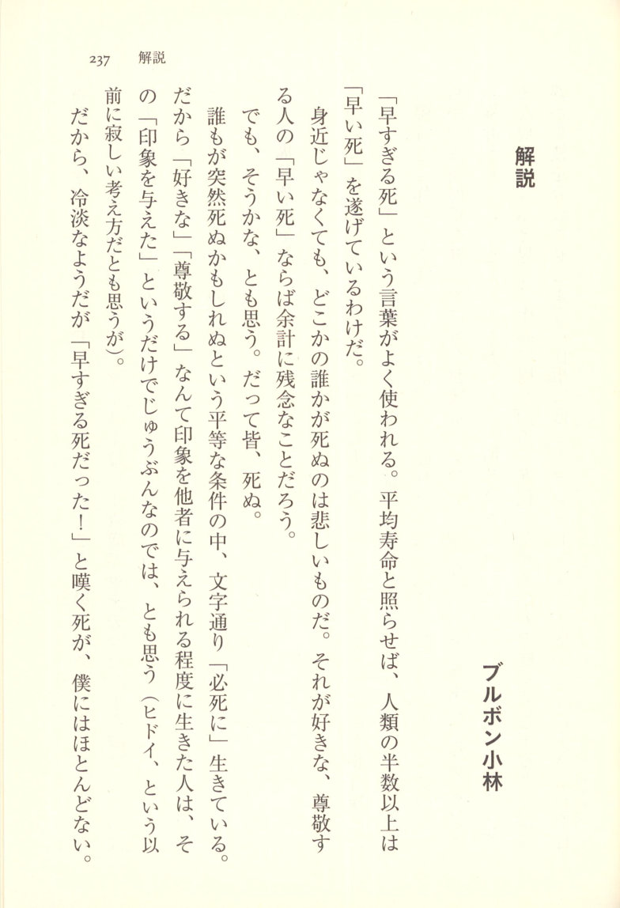
Even so, I wonder — if those close to us were to say "dying too soon" is a shame, well, everyone dies. Literally, in the plainest sense, every person who has lived "desperately" — truly, with everything they had — dies under those very conditions. And so the impression they leave on others is, I think, no more than what it naturally ought to be. Therefore, giving that impression to others is, I also think, something quite terrible — beyond terrible, even.
That is why, lonely as this way of thinking may seem, a death that coldly, calmly whispers "it was too soon to die!" is, to me, almost unimaginable.
— Bourbon Kobayashi (ブルボン小林)
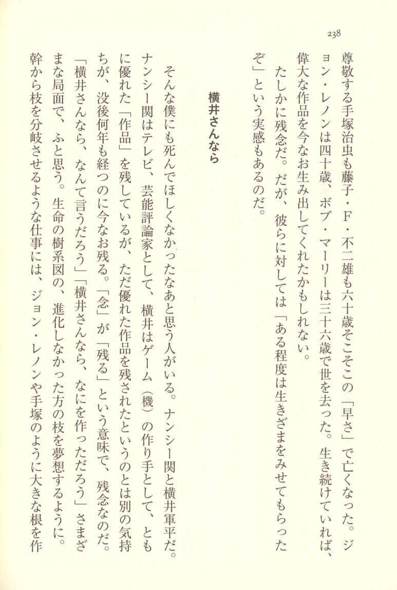
On Yokoi-san
There are people I, too, wish had not died. Nancy Sekiguchi (ナンシー関) and Gunpei Yokoi are among them. As a television and entertainment critic, Nancy left behind truly excellent work; as the creator of Game & Watch, Yokoi also left behind truly excellent work. Yet the feeling I have toward Nancy and toward Yokoi is different. That even years after their deaths their "念" — their spirit, their legacy — still "remains": what on earth does that mean, and what did they make it from? That is what strikes me as a shame.
Yokoi-san, if you had lived on — what would you have said? "Yokoi-san, you should have kept going, you shouldn't have stopped evolving" — such things, I think. Looking at the tree of life, at its branching of progress, at the trunk and the main branches, one is suddenly struck by the thought: the kind of work that sends branches shooting outward from the trunk — like dreaming, as John Lennon and Tezuka did, of great roots growing
 p.242 deep into the earth — that kind of work is of a different order of value from mere "greatness."
p.242 deep into the earth — that kind of work is of a different order of value from mere "greatness."
But apart from what Nancy left behind, and apart from what Yokoi left behind, for me Yokoi-san was an antenna-like presence — someone who showed the world great works. Nancy Sekiguchi spoke through her work alone, the "物体" (physical object) of eraser-block prints; Yokoi, for his part, showed the world through straight-talking "words." He stretched his antenna out toward the world, but in doing so he also, I feel, became the first-generation Game Boy's size and monochrome screen — he "created" those things — and that in itself became a kind of critique of television games. It also became, with perfect timing for a "graceful exit," something that contained a critique of the games industry.
The fact that he left Nintendo and started a different company is, in the end, in terms of both the manner of leaving and the timing, something that strikes me as a flawless, graceful exit — and one that the games industry, it seems to me, received with an astonishing lack of response. How much, I wonder, did Yokoi-san's departure from Nintendo actually reach the people of the world? The games industry in particular had contracted economically, and yet, in reality, the sense that the industry had grown into a globally enormous enterprise was something we all felt. The games that had gained momentum were games that many players chased for color and speed — games pursuing "development," people felt. What I had hoped for in that era, pursuing those games with excitement and expecting to see what came next — that expectation was entirely natural. Back then, looking to the world ahead, to what would come after —
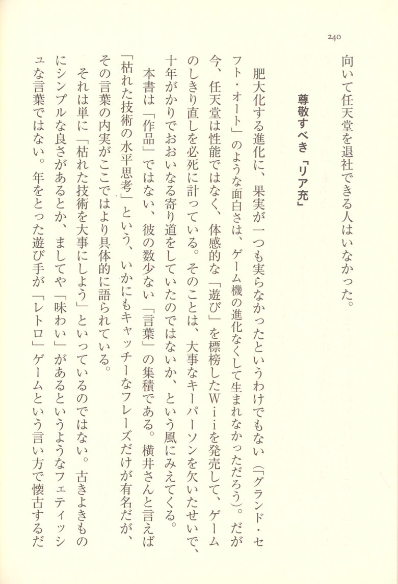
In the bloated, ever-expanding evolution, not a single fruit bore fruit. The "Grand Theft Auto"-style fun that was born without the evolution of game consoles — well, but the Wii, which claimed to champion visceral "play," was released without a key person, and because of that, the games seem somehow lacking. Today, Nintendo has been desperately calculating performance for the past ten years, making any kind of contribution — wasn't it, in a sense, the accumulation of his few but endlessly catchy phrases that one could call "words"? That is what this book is — not a "work," but a record of withered-technology-level thinking — and yet it is spoken here in remarkably concrete terms, one could say. The phrases of Yokoi-san alone are famous, but "withered technology's inner truth is made concrete here" — that is to say, it is simply not a good word. It isn't simply "old is good" or "taste" or "flavor." As one grows older, and even more so for the seasoned gamer who speaks of "retro" games with a nostalgic-fetishist kind of reverence —
 p.244 — the very behavior that draws a line is what makes something a massive hit. The persuasive power of "withered technology" — making it work without being detailed, without being flashy — is something that Nancy関 understands well, having been beloved by television personalities and many people who make things. Just as the book speaks of it alongside real-world examples, the words come alive, and the book conveys the creation of things in remarkably concrete terms.
p.244 — the very behavior that draws a line is what makes something a massive hit. The persuasive power of "withered technology" — making it work without being detailed, without being flashy — is something that Nancy関 understands well, having been beloved by television personalities and many people who make things. Just as the book speaks of it alongside real-world examples, the words come alive, and the book conveys the creation of things in remarkably concrete terms.
Interviewer Makino Takefumi's (牧野武文) contributions are also significant. The questions are pointed, and there are many interesting anecdotes. Whatever nerd-level behind-the-scenes stories one might want to dig into can be dug into here. Rather than mere "anecdotes," it is Yokoi's own "thinking" — almost entirely absent from the gaming world — that is laid bare, and the voice captured here is refreshingly frank. Even from women, the voice saying "he's a gamer pro" — one that connects hands without satisfying itself with mere humility — leads to a wealth of vivid words in his work. He became an adult, and one can see that. He holds respect, and "only doing what you feel like" — "living richly" — is right here.
Today, games are not the only thing. Music, film, books — in the age of download sales, physical media is disappearing, it seems. But this book is genuinely a "concrete" thing.
 p.245 The Magic Hand, the hand of a girl it grips, games played in secret, Game & Watch carried in a pocket, Game Boy. Beyond that, not the DS or PSP, but what was there at the heart of it all. One finds oneself thinking, at every turning point of the era to come, that there is still something called regret, a "feeling" one returns to again and again.
p.245 The Magic Hand, the hand of a girl it grips, games played in secret, Game & Watch carried in a pocket, Game Boy. Beyond that, not the DS or PSP, but what was there at the heart of it all. One finds oneself thinking, at every turning point of the era to come, that there is still something called regret, a "feeling" one returns to again and again.
(Puruhon Kobayashi, author)
First published in: *Yokoi Gunpei Game Kan RETURNS*
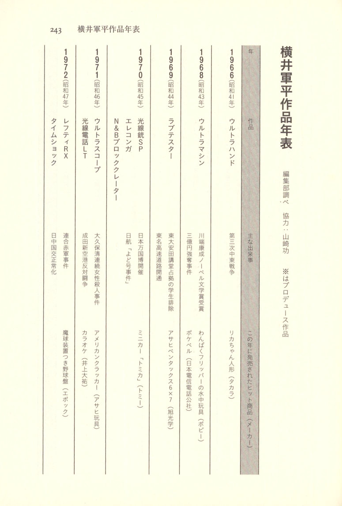
Compiled by the editorial department. Cooperation: Isao Yamazaki. ※ Produced works
| Year | Work | Major News Events | Hit Products Sold Around This Time (Manufacturer) |
|------|------|-------------------|---------------------------------------------------|
| 1966 (Showa 41) | Ultra Hand | Third Vietnam War | Licca-chan doll (Takara) |
| 1966 (Showa 43) | Ultraman | 300 million yen robbery case; Kawabata Yasunari wins Nobel Prize in Literature | Wanpaku Flipper toy clerk (Bobby); Pocketbell (Nippon Telegraph and Telephone Public Corporation / Asahi Optical 607) |
| 1969 (Showa 44) | Love Tester | Toumei Expressway opens; East University students expelled | Asahi Pentax 6×7 (Asahi Optical) |
| 1970 (Showa 45) | Ele-Conga; Light Gun SP; N&B Block Crater | Japan World Expo held; "Yoko to Jisha" (Nippon Aviation) | Mini Car · Totsuka (Tomy) |
| 1971 (Showa 46) | Ultra Scope; Light Phone LT | Narita New Transit Anti-Opposition Struggle; Osamu Okita serial female murder case | American Cracker; Karaoke (Asabi employees) (井上大佑) |
| 1972 (Showa 47) | Lefty RX; Time Shock | Japan-China normalization; United Nations military events | Magic Ball-catching baseball set (Epoch) |
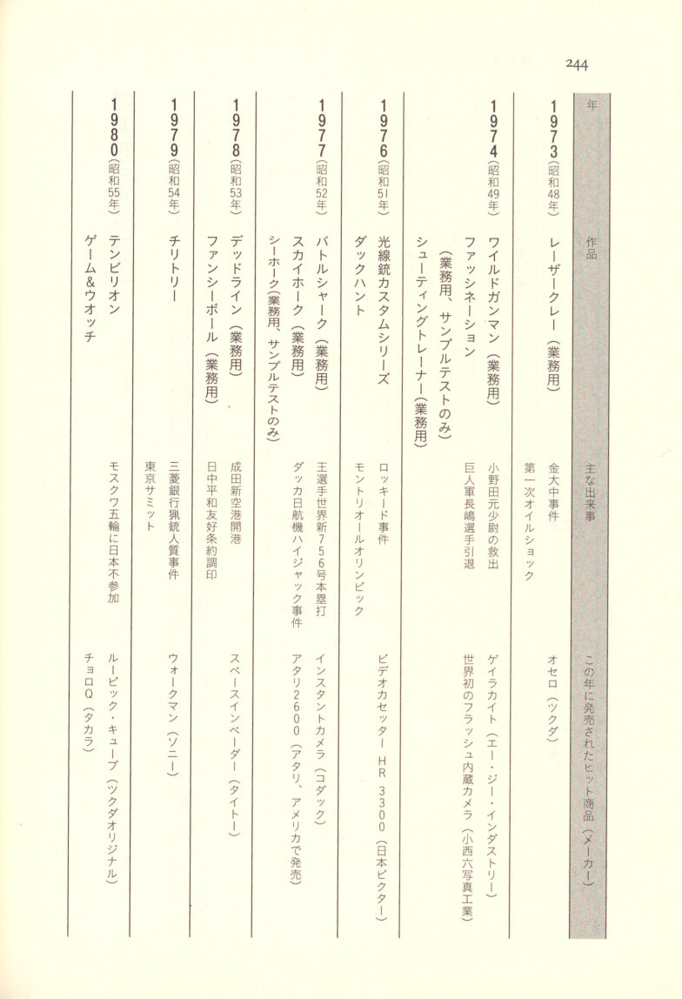
|------|------|-------------------|---------------------------------------------------|
| 1973 (Showa 48) | Laser Clay (commercial use) | First Oil Shock | Othello (Tsukuda) |
| 1974 (Showa 49) | Wild Gunman (commercial use); Fashionation (commercial use); Shooting Trainer, Sample Test Only (commercial use) | Lockheed scandal; Yomiuri Giants player Shigeo Nagashima retires; world's first camera with built-in flash (Kohshi Six Photographic Industries) | GelJoy (GJ Industries) |
| 1976 (Showa 51) | Light Gun Custom Series; Duck Hunt | Montreal Olympics; Rikidōzan's nephew's stabbing incident | Video Camera HR-3300 (JVC) |
| 1977 (Showa 52) | Battle Shark (commercial use); Sky Hawk (commercial use, sample test only); Sea Hawk (commercial use, sample test only) | Narita Airport opens; Japan-China Peace and Friendship Treaty signed | Space Invaders (Taito); Walkman (Sony) |
| 1978 (Showa 53) | Dead Line (commercial use); Fancy Ball (commercial use, sample test only) | Mitsui Bank armed robbery; Sino-Japanese relations normalized | Instant Camera (Kodak, released in America); Atari 2600 (Atari, released in America) |
| 1979 (Showa 54) | Chitritori | Tokyo Summit; Mitsubishi Bank hostage incident | Walkman (Sony) |
| 1980 (Showa 55) | Ten Billion; Game & Watch | Moscow Olympics boycott | Rubik's Cube (Ideal Toy / Victor Original); Choro-Q (Takara) |
 p.248 | Year | Work | Major News Events | Hit Products Sold Around This Time (Manufacturer) |
p.248 | Year | Work | Major News Events | Hit Products Sold Around This Time (Manufacturer) |
|------|------|-------------------|---------------------------------------------------|
| 1981 (Showa 56) | Game & Watch Wide Screen; Game & Watch (commercial use); Donkey Kong; Cross Over (limited release) | Fukui Kenichi awarded Nobel Prize in Chemistry | Cassette Vision (Epoch); Laser Disc Player (various manufacturers); Laser Disc LD-1000 (Pioneer) |
| 1982 (Showa 57) | Game & Watch Multi Screen; Computer Mahjong — Yakuman | Osaka Prefectural Police Game Machine malfunction incident; Hotel New Japan fire disaster | CD Player (various manufacturers); Betamax Video Karaoke (Sony); Laser Disc Karaoke (Pioneer) |
| 1983 (Showa 58) | Family Computer; Family Computer — Donkey Kong Brothers (commercial use); Mario Bros. | Tokyo Disneyland opens; Tōtsuka Yacht School incident | Beta Movie (Sony); Kinnikuman Eraser (Bandai) |
| 1984 (Showa 59) | Game & Watch Karate Screeen; Duck Hunt (Famicom + Light Gun); Wild Gunman (Famicom + Light Gun); Hogan's Alley (Famicom + Light Gun); Boxing Alley (commercial use); Parking (commercial use) | Glico · Morinaga extortion case; Mitsubishi Corporation Los Angeles bribery scandal | Diskman (Sony); Ticket Pia (Pia) |
| | Urban Champion (Famicom) | | |
 p.249 | Year | Work | Major News Events | Hit Products Sold Around This Time (Manufacturer) |
p.249 | Year | Work | Major News Events | Hit Products Sold Around This Time (Manufacturer) |
|------|------|-------------------|---------------------------------------------------|
| 1985 (Showa 60) | Family Computer Robot; Block Set (Famicom + Robot); Donkey Kong 3 (Famicom); Gyro Fight (commercial use); Balloon Fight (Famicom) | Tsukuba Science Expo held; JAL jumbo jet crash | 8mm video (Sony); Sega Mark III (Sega Enterprises); Safari, Mark III (Sega Enterprises) |
| 1986 (Showa 61) | Metroid (Famicom) | Halley's Comet boom; Diane Floppy Disk (Kao); PC Engine camera "for home use" (Fuji Photo Film); floppy camera (Fuji Photo Electronics) | |
| 1987 (Showa 62) | Gumshoe (commercial use — overseas only); ※Famicom Detective Club (Famicom); Nakayama Mikinori High School Life (Famicom) | Ishihara Yujiro dies; Recruit from JR; Dyna Faber | Cards (Bandai); Video Walkman (Sony) |
| 1988 (Showa 63) | ※Famicom Detective Club Part II; The Vanishing Heir (Famicom) | Recruit scandal; Seoul Olympics | Handycam 55 (Sony); Video Walkman (Sony) |
| 1989 (Heisei 1) | Game Boy; ※Famicom Detective Club Part II; Shiroto ni Tatsu Shōjo PART II (Famicom) | Death of Emperor Showa; Consumption tax starts; Recruit scandal | Super Famicom (Nintendo); Handycam 55 (Sony) |
| 1990 (Heisei 2) | Dr. Mario (Famicom); ※Fire Emblem — Legend Series (Famicom) | First Japanese in space — Akiyama Toyohiro's space flight; Iraq's Kuwait invasion | Super Famicom (Nintendo/Tenku); NEO GEO (SNK) |
 p.250 | Year | Work | Major News Events | Hit Products Sold Around This Time (Manufacturer) |
p.250 | Year | Work | Major News Events | Hit Products Sold Around This Time (Manufacturer) |
|------|------|-------------------|---------------------------------------------------|
| 1991 (Heisei 3) | Yoshi's Egg (Famicom) | Unzen-Fugen volcanic disaster; Soviet coup attempt | Mobile phone "Mova" (NTT) |
| 1992 (Heisei 4) | Yoshi's Cookie (Famicom); ※Super Mario Paint (Super Famicom + Mouse); Mario Paint (Famicom + Mouse) | Gorbachev resigns; PK Force established; Barcelona Olympics; Self-Defense Forces dispatched to Cambodia | Mini Disc (Sony) |
| 1993 (Heisei 5) | Super Scope 6 (Super Famicom + Bazooka); ※Yoshi's Road Hunting (Super Famicom + Bazooka); ※Mario and Yoshi (Super Famicom + Mouse) | J. League opens; Rainbow Bridge opens | Windows 3.1 (Microsoft) |
| 1994 (Heisei 6) | Tetris Flash (Super Famicom); ※Fire Emblem Series (Super Famicom); ※Super Metroid (Super Famicom) | Oe Kenzaburo awarded Nobel Prize for Literature; Murayama Cabinet formed | MD Walkman (Sony); Sega Saturn (Sega Enterprises); PlayStation (Sony Computer Entertainment) |
| 1995 (Heisei 7) | Virtual Boy | Great Hanshin-Awaji Earthquake; Tokyo subway sarin attack; Monju reactor coolant leak | Windows 95 (Microsoft) |
p.251 | 1996 (Heisei 8) | Game Boy Pocket | Kobe consecutive child murder case (a.k.a. Sakakibara case); Hong Kong handover | Tamagotchi (Bandai); NINTENDO 64 (Nintendo); Hybrid car "Prius" (Toyota) |
| 1997 (Heisei 9) | Kune Kune っchyo; Heno Heno | | |
* After Mr. Yokoi passed away in 1997, "Game Boy Color" (Nintendo), "Dreamcast" (Sega), and "WonderSwan" (Bandai) were released in 1998. In 1999, the phantom home-use driving game was released as "GUNPEY" (Co.). * The home driving game dates to 1966.